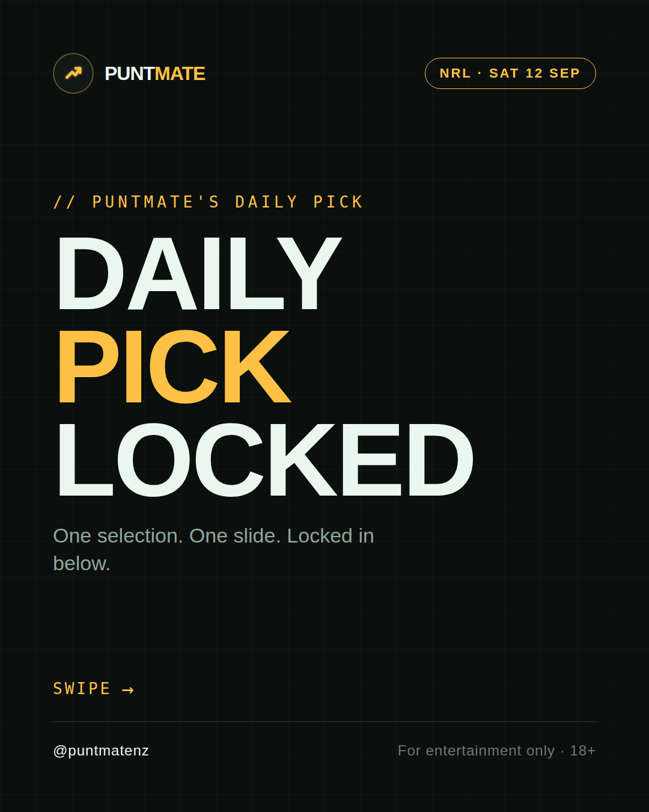
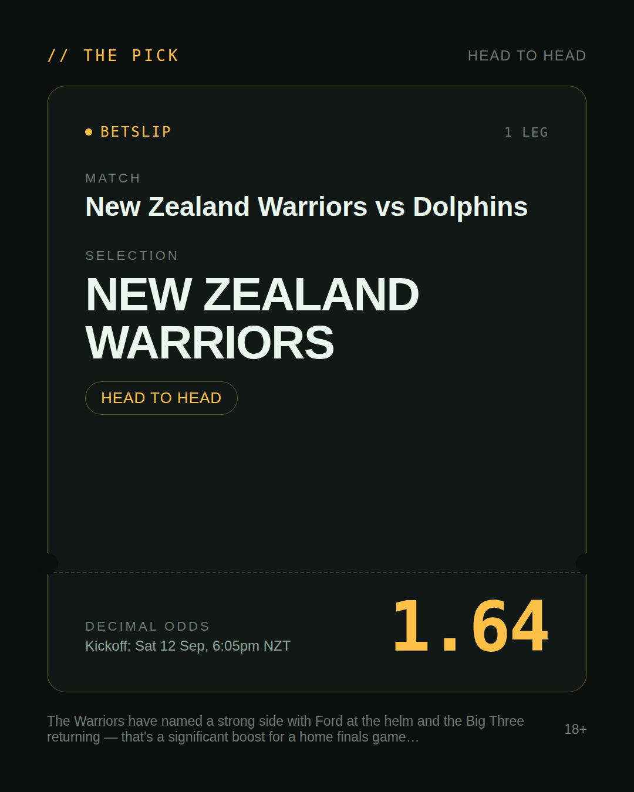
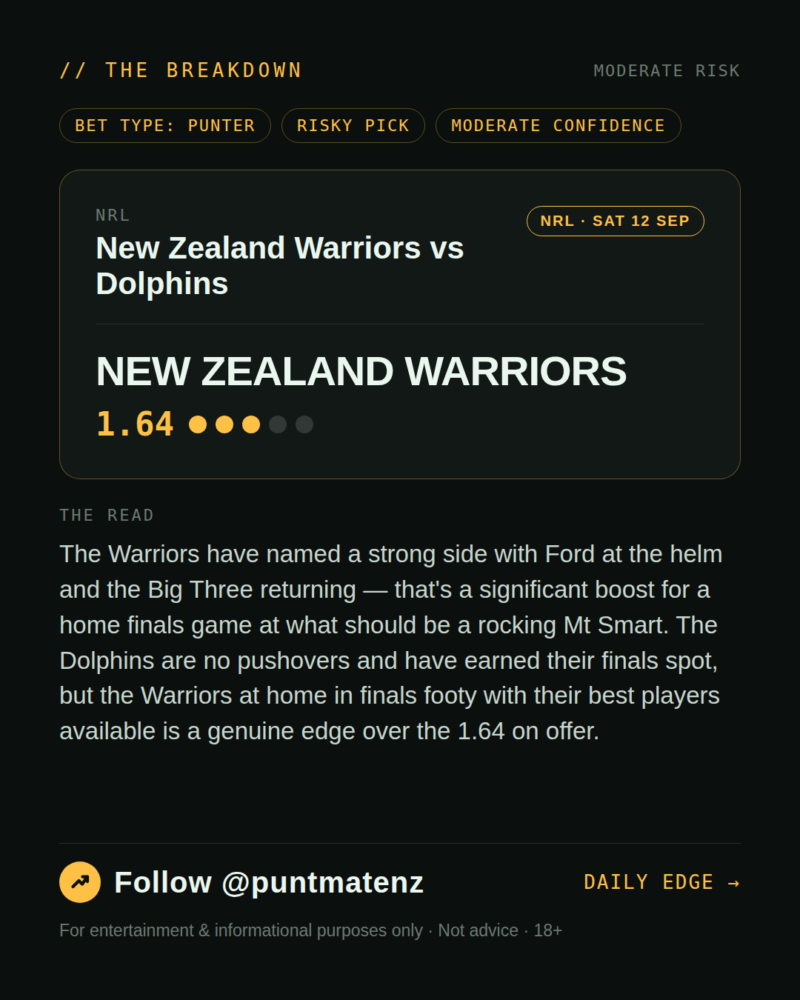
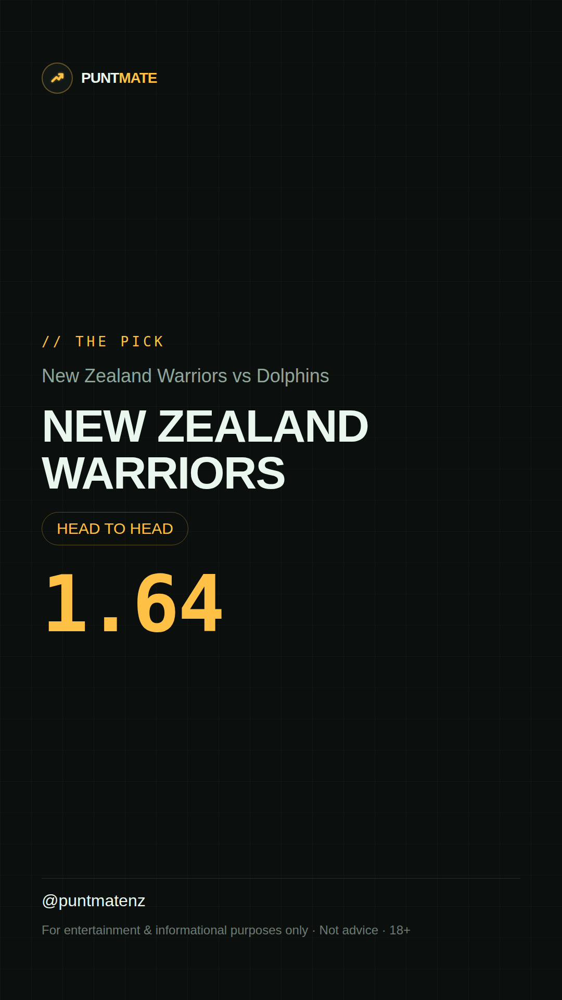

*🎯 PUNTMATE NZ — NRL* 🏟 New Zealand Warriors vs Dolphins *PICK:* NEW ZEALAND WARRIORS *ODDS:* 1.64 (Head to Head) *BET TYPE: PUNTER* _The Warriors have named a strong side with Ford at the helm and the Big Three returning — that's a significant boost for a home finals game at what should be a rocking Mt Smart. The Dolphins are no pushovers and have earned their finals spot, but the Warriors at home in finals footy with their best players available is a genuine edge over the 1.64 on offer._ ────────────────── 📲 Join Telegram for daily picks ⚠️ For entertainment & informational purposes only. Not advice. 18+.
🎯 NRL — New Zealand Warriors vs Dolphins NEW ZEALAND WARRIORS @ 1.64 (Head to Head) BET TYPE: PUNTER Solid touch here. Not a lock, but the value's real and the form backs it up. The Warriors have named a strong side with Ford at the helm and the Big Three returning — that's a significant boost for a home finals game at what should be a rocking Mt Smart. The Dolphins are no pushovers and have earned their finals spot, but the Warriors at home in finals footy with their best players available is a genuine edge over the 1.64 on offer. Follow for daily value picks → @puntmatenz ⚠️ For entertainment & informational purposes only. Not advice. 18+. #PuntmateNZ #SportsBetting #NZTAB #NRL
| has_pick | True |
| pick_id | 2026-09-11_New_Zealand_Warriors_vs_Dolphins |
| run_id | 34653732351 |
| generated_at | 2026-09-11T22:25:50.875219+00:00 |
| post_date | 2026-09-11 |
| match | New Zealand Warriors vs Dolphins |
| sport | rugbyleague_nrl |
| sport_label | NRL |
| market | Head to Head |
| selection | NEW ZEALAND WARRIORS |
| odds | 1.64 |
| bet_type | PUNTER_BET |
| bet_type_label | BET TYPE: PUNTER |
| bet_type_reason | Solid touch here. Not a lock, but the value's real and the form backs it up. The Warriors have named a strong side with Ford at the helm and the Big Three returning — that's a significant boost for a home finals game at what should be a rocking Mt Smart. The Dolphins are no pushovers and have earned their finals spot, but the Warriors at home in finals footy with their best players available is a genuine edge over the 1.64 on offer. |
| classification | RISKY_PICK |
| risk | RISKY_PICK |
| confidence | MODERATE |
| confidence_label | MODERATE |
| final_explanation | The Warriors have named a strong side with Ford at the helm and the Big Three returning — that's a significant boost for a home finals game at what should be a rocking Mt Smart. The Dolphins are no pushovers and have earned their finals spot, but the Warriors at home in finals footy with their best players available is a genuine edge over the 1.64 on offer. |
| public_caution | Keep this one light — the value's there but so is the uncertainty. |
| theme | night |
| carousel_paths | ['data/review/2026-09-11_New_Zealand_Warriors_vs_Dolphins/cover.png', 'data/review/2026-09-11_New_Zealand_Warriors_vs_Dolphins/tip.png', 'data/review/2026-09-11_New_Zealand_Warriors_vs_Dolphins/breakdown.png'] |
| carousel_urls | ['https://raw.githubusercontent.com/kingofthecastle24/puntmate/main/data/cards/2026-09-11_New_Zealand_Warriors_vs_Dolphins_night_1_cover.png', 'https://raw.githubusercontent.com/kingofthecastle24/puntmate/main/data/cards/2026-09-11_New_Zealand_Warriors_vs_Dolphins_night_2_tip.png', 'https://raw.githubusercontent.com/kingofthecastle24/puntmate/main/data/cards/2026-09-11_New_Zealand_Warriors_vs_Dolphins_night_3_breakdown.png'] |
| story_path | data/review/2026-09-11_New_Zealand_Warriors_vs_Dolphins/story.png |
| story_url | https://raw.githubusercontent.com/kingofthecastle24/puntmate/main/data/cards/2026-09-11_New_Zealand_Warriors_vs_Dolphins_night_story.png |
| intended_platforms | ['telegram', 'instagram_feed', 'instagram_story', 'facebook'] |
| workflow_state | GENERATED |
| has_punter_multi | False |
| has_gambler_multi | False |
| has_degenerate_multi | False |